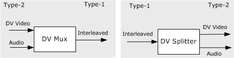

[The feature associated with this page, DirectShow, is a legacy feature. It has been superseded by MediaPlayer, IMFMediaEngine, and Audio/Video Capture in Media Foundation. Those features have been optimized for Windows 10 and Windows 11. Microsoft strongly recommends that new code use MediaPlayer, IMFMediaEngine and Audio/Video Capture in Media Foundation instead of DirectShow, when possible. Microsoft suggests that existing code that uses the legacy APIs be rewritten to use the new APIs if possible.]
DV cameras produce interleaved audio-video; each frame of video also contains the audio information. If you save DV data to an AVI file, you have a choice:
For video capture, where maximum throughput is crucial, it is better to use a type-1 file, because type-2 files carry redundant audio data. (The video stream still has the audio data. The audio is simply hidden by labeling the stream as video.) Also, writing a type-2 file requires some additional processor time to split the interleaved stream.
On the other hand, type-1 files are less efficient for real-time editing. The application must extract the audio from the interleaved stream, make the edits, and interleave the data again. Also, the type-1 format is not compatible with Microsoft® Video for Windows® (VFW). DirectShow can handle both types of files.
A type-2 file can be converted to type-1 using the DV Muxer filter. A type-1 file can be converted to type-2 using the DV Splitter filter. The following diagram illustrates the difference between the two formats.

DV Data in the AVI File Format
Â
Â